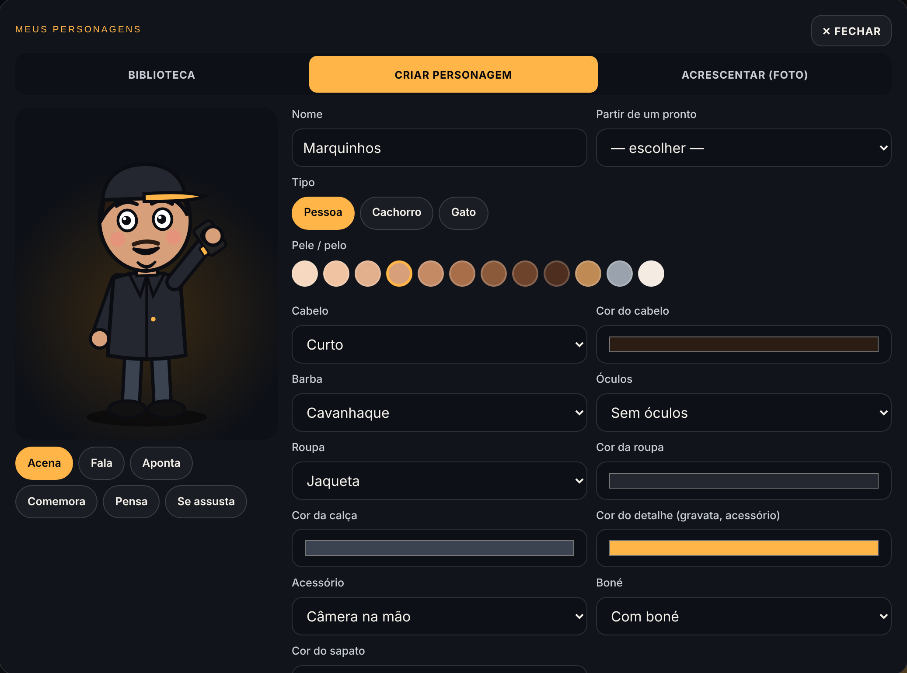

09 · Marketing
BW Reels Pro: meus personagens e som automático
Toque em 👤 PERSONAGENS no topo do BW Reels Pro. Tudo fica guardado neste aparelho e aparece para escolher na aba CENA e no ANIMAR MEU PERSONAGEM.

CRIAR PERSONAGEM: a prévia já mostra ele se mexendo.
- 1CRIAR PERSONAGEM: pessoa, cachorro ou gato; pele, cabelo, barba, óculos, roupa, cores, acessório (headset, câmera, microfone, crachá, véu) e boné. Teste as ações (acena, fala, comemora…), use 🎲 SORTEAR ou parta de um pronto, e ★ SALVAR.
- 2ACRESCENTAR (FOTO): envie a foto ou o PNG do seu avatar ou mascote — o fundo sai no aparelho — e guarde. No ANIMAR MEU PERSONAGEM também dá para tocar em ★ GUARDAR.
- 319 prontos para usar: Bê, Ana, Léo, Bia, Rui, Robô, cinegrafista, técnico de som, DJ, palestrante, executivo, executiva, noiva, noivo, fotógrafa, cliente, garçom, cachorro e gato.
- 4SOM AUTOMÁTICO (aba MÍDIA): trilha de fundo feita pelo motor para cada estilo e efeitos que acompanham a animação (balão, “blip” da fala, pulo, confete, lista, contador, botão). Sem direitos autorais; sai igual no vídeo final. Com música própria, a trilha desliga sozinha.